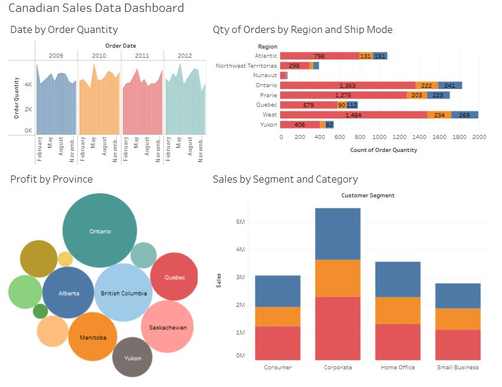

Tableau Projects
Green Tableau Project using Superstore Data
6 October, 2022
In this project I used Tableau Desktop to create a dashboard showing relationships between variables from Tableau's Superstore dataset. Interestingly, this dashboard boasts an iconography filter toolbar, a footer which updates to show the most recent change the data source, a dynamic header (title updates grammar to reflect quantities in the filter), and interdependent charts. On top of the profit graph on the ride, I also calculated a six-week moving average as a type of descriptive analysis.
Canadian Sales Tableau Dashboard
28 September, 2022
In this project I created a colourful and dynamic Tableau dashboard to display relationships between variables in a Canadian sales dataset. In the top left I created a multivariate interactive chart which details the relationships between order quantity, ship mode, and province location. Another multivariate chart on the bottom right shows the relationships between customer segment, profit, and product category.
Red/Blue Superstore Profit Dashboard
21 October, 2022
This was another type of dashboard I created from Tableau's superstore dataset. Positive profits are shown in blue while negative profits are shown in red. The charts are interdependent so clicking one variable in any chart will cause the rest to update. We can see from the chart on the right that while certain ship modes are associated with higher profits, this correlation could be explained by higher order quantity.
First Tableau Project with Donut and Butterfly Charts
8 September, 2022
In this project I created my first Tableau project using customer sales data. You can see that my Tableau formatting skills are a little green, but two parts of this dashboard in particular make me proud: the donut chart and the butterfly chart. These two interactive charts do not come with the Tableau software, and the way to create them is by tinkering with the pre-existing options to create something new altogether. The complexity of this dashboard was a challenge and I enjoyed it. My skills around spacing and sizing would improve in later dashboard projects.
- Design: HTML5 UP